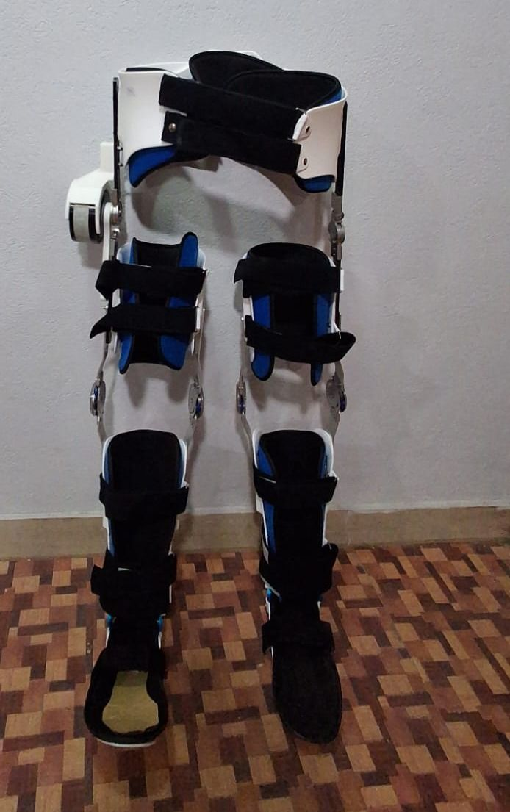
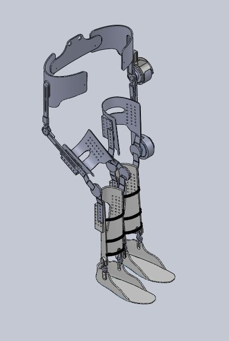
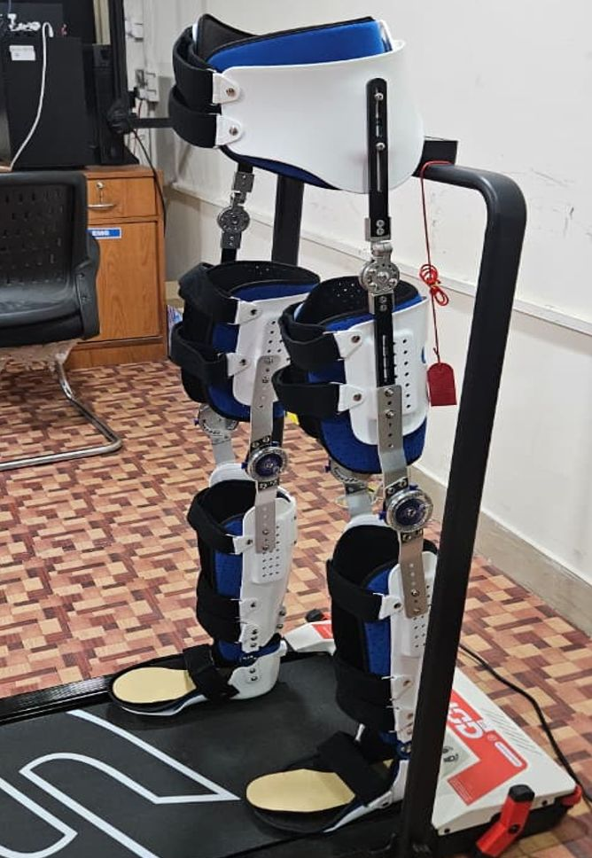
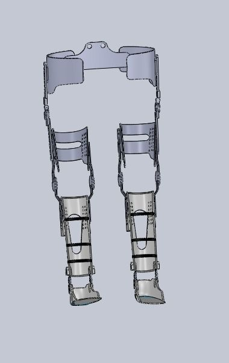
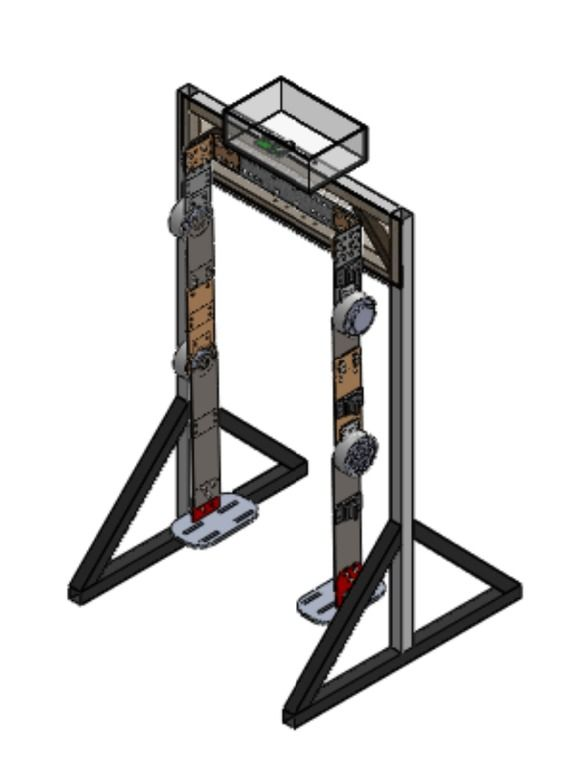
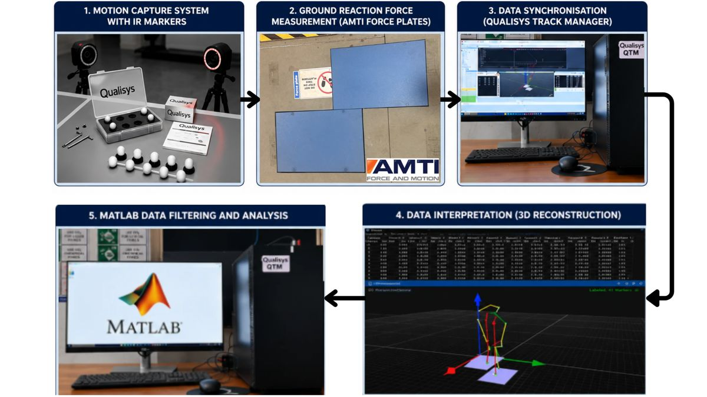

← Projects / Research
Ongoing research · TIET–UQ Centre of Excellence
R3.Robots thathelp people walk.
A wearable lower-limb exoskeleton for rehabilitation, judged not just by how well it moves, but by how well it moves the person wearing it. I work on the experiments and the mechanical side.
Gen 3 exoskeleton, in the lab
Jun 2025research intern since
IEEE T-ROmanuscript under review
Gen 4current exoskeleton generation
01 The hardware
From CAD to a robot you can wear.





02 In the lab
Measure the human. Test the robot.
03 In action
Movement, turned into data.

My role
Research Intern on the R3 programme.
I built the gait-lab experimental workflow and contribute to the exoskeleton's mechanical development. Mentors: Prof. Ashish Singla, Dr. Sachin Kansal (TIET) and Dr. Alejandro Melendez-Calderon (UQ).